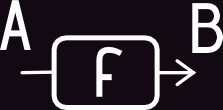
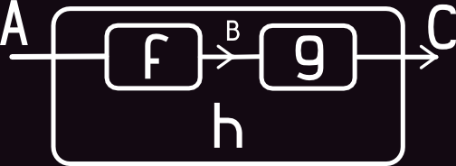
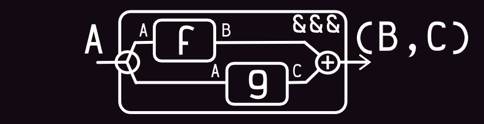
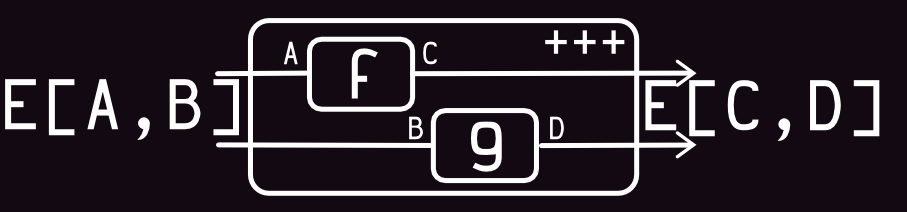
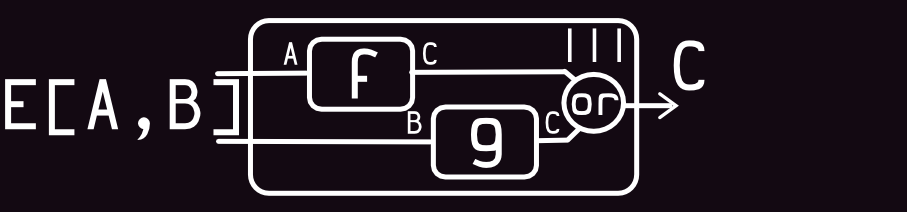
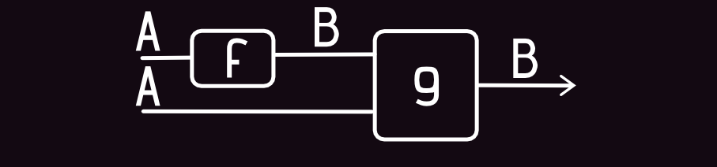
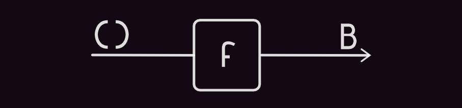

Baseline & Goals:
The most imaportant ideas in modern functional programming are:
-
It's all about data
functional programming is all about putting data first. The first is defining what kinds of data we have in a problem domain, and what kinds of transformations we want on them. Then we building up the data structures and the code to do the transformations.
-
Managing of side-effect
functional programming is not about pure functions any more. Eventually, programs will produce side-effects and side-effect management is a puzzle with many parts.
"to show one of technics of managing your data & control side-effect"
Function
Abstraction:
Code:
val f: String => Int = str => str.length
f("Hello") shouldEqual 5
f("By!") shouldEqual 3
Definition:
Code:
val f: String => Int = str => str.length
val g: Int => Int = i => i * 2
val h = g compose f // f >>> g
h("Hello") shouldEqual 10
h("Workday") shouldEqual 14
Combinators
“a function which builds program fragments from program fragments; in a sense the programmer using combinators constructs much of the desired program automatically, rather than writing every detail by hand”
- John Hughes Generalising Monads to Arrows
Arrows with Product
the structure of a product type is determined by the fixed order of the operands in the product. The product of type1, ..., typen is written type1 * ... * typen in ML and (type1,...,typen).
Definition:

Code:
// Tuple2[A, B] - scala implementation of product type
def fst[A,B]: ((A,B)) => A = prod => prod._1 // _1 - scala impl of fst
def snd[A,B]: ((A,B)) => B = prod => prod._2 // _2 - scala impl of snd
def delta[A, B, C]: (C => A) => (C => B) => (C => (A,B)) =
f => g => x => (f(x), g(x))
val f: String => Int = str => str.length
val g: String => String = str => str.toUpperCase
val h = delta(f)(g)
forAll { (any: String) =>
(h andThen fst)(any) == f(any) &&
(h andThen snd)(any) == g(any)
}
Function and Combinators (Part 2)
View (split function):
Code:
val f: String => Int = str => str.length
val g: String => String = str => str.toUpperCase
val h = f &&& g
h("Hello") shouldEqual (5, "HELLO")
h("Workday") shouldEqual (7, "WORKDAY")
View (combine function):

Code:
val f: String => Int = str => str.length
val g: String => String = str => str.toUpperCase
val h = f *** g
h("Hello", "Workday") shouldEqual (5, "WORKDAY")
Arrow Type-Class:
An arrow is the term used in category theory as an abstract notion of thing that behaves like a function.
trait Arrow[~>[-_, +_]] extends Category[~>] {
def arr[B, C](f: B => C): B ~> C
def first[B, C, D](f: B ~> C): (B, D) ~> (C, D)
def second[A, B, C](f: A ~> B): (C, A) ~> (C, B)
def &&&[B, C, C2](fbc: B ~> C, fbc2: B ~> C2): B ~> (C, C2)
def ***[B, C, B2, C2](fbc: B ~> C, fbc2: B2 ~> C2): (B, B2) ~> (C, C2)
}
And Category Type-Class:
trait Category[~>[-_, +_]] {
def id[A]: A ~> A
def compose[A, B, C](f: B ~> C, g: A ~> B): A ~> C
}
Arrows with CoProduct
very similar to the Either data type; the only difference is that it does not combine two base types, but two type constructors.
Definition:
Code:
// Either[A, B] - scala implementation of co-product type
def left[A,B]: A => Either[A,B] = a => Left(a)
def right[A,B]: B => Either[A,B] = b => Right(b)
def delta[A, B, C]: (A => C) => (B => C) => (Either[A, B] => C) =
f => g => x => x match {
case Left(a) => f(a)
case Right(b) => g(b)
}
val f: Int => String = i => i.toString
val g: String => String = str => str * 2
val h = delta(f)(g)
forAll { (anyStr: String, anyInt: Int) =>
(left andThen h)(anyInt) == f(anyInt) &&
(right andThen h)(anyStr) == g(anyStr)
}
Function and Combinators (Part 3)
View (multiplex function):
Code:
val f: String => Int = str => str.length
val g: String => String = str => str.toUpperCase
val h = f +++ g
h apply Left[String, String]("Hello") shouldEqual L[Int, String](5)
h apply Right[String, String]("Hello") shouldEqual R[Int, String]("HELLO")
View (merge function):
Code:
val f: String => Int = str => str.length
val g: String => String = str => str.toUpperCase
val h = f ||| g
h apply Left[String, String]("Hello") shouldEqual 5
h apply Right[String, String]("Hello") shouldEqual "HELLO"
ArrowChoice Type-Class:
make a choice between two arrows on the basis of a previous result
trait ArrowChoice[~>[-_, +_]] extends Arrow[~>] {
type E[A, B] = Either[A, B]
def left[B, C, D](a: B ~> C): E[B, D] ~> E[C, D]
def right[B, C, D](a: B ~> C): E[D, B] ~> E[D, C]
def +++[B, C, B2, C2](a: B ~> C, b: B2 ~> C2): E[B, B2] ~> E[C, C2]
def |||[B, C, D](a: B ~> D, b: C ~> D): E[B, C] ~> D
}
Arrows
Arrow is generalization of function, what provide more function combinators:Like first/second/split/combine, ...
Kleisli & Co-Kleisli Arrow
val f: String => Int = str => str.length
f("Hello") shouldEqual 5
Option("Hello").map(f) shouldEqual Option(5)
val f: String => Option[Int] = str =>
if(str.length <6) None
else Option(str.length)
f("Hello") shouldEqual None
f("Workday") shouldEqual Option(7)
val f: Option[String] => Int = str =>
str.map(_.toUpperCase).getOrElse("")
f(Option("Hello")) shouldEqual "HELLO"
f(None) shouldEqual ""
KleisliCategory Type-Class:
type Kleisli[M[+_], -A, +B] = A => M[A]
trait KleisliCategory[M[+_]]
extends Category[({type λ[-α, +β] = Kleisli[M, α, β]})#λ] {
// ...
}
KleisliCategory Type-Class (with Kind Projector plugin):
trait KleisliCategory[M[+_]]
extends Category[Kleisli[M, -?, +?]] {
// ...
}
KleisliArrow Type-Class:
type Kleisli[M[+_], -A, +B] = A => M[A]
trait KleisliCategory[M[+_]]
extends Category[Kleisli[M, -?, +?]] {
// ...
}
trait KleisliArrow[M[+_]]
extends Arrow[Kleisli[M, -?, +?]]
with KleisliCategory[M] {
// ...
}
But what is M[_] (only Option)?
- All functions have effects, the things the function does. The simplest effect is just accepting parameters and returning a single value as a result.
- Everything else we might conceive a function doing is a side-effect. By wrapping a value in a container, we can emulate all the various side-effects that are possible.
Examples:
|
have many results |
|
sometimes have no result |
|
postponed result or may be no result |
|
write to log |
|
read from environment |
Arrows & Monads
Common data manipulation techniques for dealing with side-effecting containers:
Functor & Monad (essence):
Functor : A => B => C[A] => C[B]
Monad : A => C[B] => C[A] => C[B]
Arrow (essence):
Arrow : (A => B ) >>> (B => D ) => A => D
Kleisli : (A => C[B]) >=> (B => C[D]) => A => C[D]
- Arrows build a container for the whole functions, where Monads just give a common structure for their outputs.
- Arrows can have more then one input.
For:
case class User(id: Int, name: String, password: String)
def getUserById: Int => Option[User] = ...
def updateDbUser: User => Option[Int] = ...
def updateName: String => User => Option[User] = ...
def updatePassword: String => User => Option[User] = ...
Monad usege:
def update(id: Int, update: User => Option[User]) =
getUserById(id).flatMap(update).flatMap(updateDbUser)
update(10, (user: User) => updateName(name).flatMap(updatePassword(password)))
Kleisli usege:
def update(id: Int, update: User => Option[User]) =
Kleisli { getUserById(id) } >==> update >==> updateDbUser
update(10, Kleisli { updateName(name) } >==> updatePassword(password))
KleisliArrow Type-Class (based on Monad):
case class Kleisli[M[+ _], -A, +B](run: A => M[B])
trait KleisliCategory[M[+_]] extends Category[(Kleisli[M, -?, +?]] {
implicit def Monad: Monad[M]
def id[A]: Kleisli[M, A, A] = Kleisli(a => Monad.point(a))
def compose[A, B, C](bc: Kleisli[M, B, C], ab: Kleisli[M, A, B]): Kleisli[M, A, C] =
bc.flatMap(run(ac), k.run(_: B)))
}
trait KleisliArrow[M[+_]] extends Arrow[Kleisli[M, -?, +?]] with KleisliCategory[M] {
def arr[A, B](f: A => B): Kleisli[M, A, B] = Kleisli(a => Monad.point(f(a)))
def first[A, B, C](f: Kleisli[M, A, B]): Kleisli[M, (A, C), (B, C)] =
Kleisli[M, (A, C), (B, C)] { case (a, c) => Monad.map(f.run(a), (b: B) => (b, c)) }
}
And back to the Arrow
Motivation, is to find a generic interface for arrow wich cannot be based on monad.
ArrowMonad Type-Class:
trait ArrowApply[~>[-_, +_]] extends Arrow[~>] {
def app[A, B]: (A ~> B, A) ~> B
}
case class ArrowMonad[~>[-_, +_], +A](run: Unit ~> A)
implicit def _asMonad[~>[-_, +_]](implicit i: ArrowApply[~>]):
Monad[ArrowMonad[~>, +?]] = new Monad[ArrowMonad[~>, +?]] {
type M[+A] = ArrowMonad[~>, A]
def point[A](x: => A): M[A] = ArrowMonad { i.arr(_ => x) }
def flatMap[A, B](m: M[A], f: A => M[B]): M[B] =
ArrowMonad[~>, B] { m.run >>> i.arr((x: A) => (f(x).run, ())) >>> i.app[Unit, B] }
}
trait KleisliArrowApply[M[+ _]] extends ArrowApply[Kleisli[M, -?, +?]] {
private type ~>[-A, +B] = Kleisli[M, A, B]
def app[A, B]: (A ~> B, A) ~> B = Kleisli { case (f, a) => (f.run)(a) }
}
High order Arrow Definition (ArrowApply):
MonadArrow:
Kliesli Arrow type-constructor
| Type-Class | Kind | Condition | Similar type |
|
|
(Kleisli Arrow) | |
|
|
M[_] has Monad instance | Arrow |
|
|
F[_] has Functor instance for A | Functor |
|
|
have Monoid instance for F[B] | Monoid for any A |
Arrows, Applicatives, Monads
| Arrow | Applicative |
|
|
| Laws: | |
|
|
| 4 Functions AND 6 Laws | 3 Functions AND 4 Laws |
| Arrow | Monad |
|
|
| Laws: | |
|
|
| 4 Functions AND 6 Laws | 1 Functions AND 3 Laws |
| Functions: | |
| Category (id/compose - Predef) 0 | 0 (map - by Applicative & Monad) Functor |
| Arrow (arr/first) 2 | 2 (point/ap) Applicative |
| Kleisli (flatMap) 1 | 1 (flatMap) Monad |
| 3 | 3 |
| Laws: | |
| Category 3 | 2 Functor |
| Arrow 6 | 4 Applicative |
| Kleisli - | 3 Monad |
| 9 | 9 |
Arrows, Applicatives, Monads Summary
End user benefits:
Railway Oriented Programming
- Scott Wlaschin (F# for fun and profit)
Railway tracks:
Arrow as Framework for:
- Error handling
- Single Track Function
- Dead-end Function
- Supervisory Function (handle "both track")
Dataflow programming (programming paradigm)
Initial:
case class User(id: Int, name: String, psswd: String, email: String)
def getUserById: Int => Either[Err, User] = ???
def updateDbUser: User => Either[Err, Int] = ???
def updateName: String => User => User = ???
def sendEmail: User => Unit = ???
def id[T]: T => T = x => x
def leftId[E, T]: Err => Either[E, T] = x => Left { x }
def fst[A, B]: (A, B) => A = _._1
Track:
val run =
getUserById >>>
updateName(name).right >>>
((id[User] &&& sendEmail) >>> fst).right >>>
(leftId[Err, Int] ||| updateDbUser) // Either[Err, Int]
Track with Kleisli:
val run = Kleisli[Either[Err, +?], Int, User] {
getUserById >>>
updateName(name).right >>>
((id[User] &&& sendEmail) >>> fst).right
} >==> updateDbUser // Either[Err, Int]
Used materials and References:
- John Hughes. November 10, 1998, Generalising Monads to Arrows.
- Chris Heunen and Bart Jacobs, Arrows, like Monads, are Monoids.
- Ted Cooper (theod@pdx.edu), CS510 – Spring 2014, Arrow Basics.
- John Hughes, S-41296 Sweden, Programming with Arrows.
- Robert Atkey, LFCS, 2008, What is a Categorical Model of Arrows?
- Kazuyuki Asada, Kyoto 606-8502, Japan, Arrows are Strong Monads.
- K. Asada and I. Hasuo, (CMCS 2010)., 2010, Categorifying computations into components via arrows as profunctors.
- Thorsten Altenkirch, James Chapman, and Tarmo Uustalu, Monads Need Not Be Endofunctors.
- Sam Lindley, Philip Wadler and Jeremy Yallop, 2008, Idioms are oblivious, arrows are meticulous, monads are promiscuous
Blogs & Blogposts:
- Ruminations of a Programmer, Debasish Ghosh
- F# for fun and profit, Scott Wlaschin
- Metaplasmus, Travis Brown
- Arrow's place in the Applicative/Monad hierarchy (Cactus) Dr. Gerg ˝o Érdi
- Nothing Personal Just ⊥, Patai Gergely
- Programming Cafe, Bartosz Milewski's
- λ Tony's blog λ, Tony Morris
Questions?
Remarks?